Sklářské řemeslo se u nás v rodině dědilo nepřetržitě od roku 1775. Tady je devět generací Zahradníků tak, jak jsem je dohledal v matrikách a jak jsem je znal z vyprávění.


- 1.generace
Franciscus Zahradnik
1. polovina 18. století, Morava, okolí Buchlovic
Někdy v první polovině 18. století, v zemi Moravské, v okolí Buchlovic, žil jistý muž jménem Franciscus Zahradnik a byl… čím vlastně byl? O jeho existenci se dozvídám až z rodného listu jeho syna, kde se o něm píše: „socius ex officina“, čili „společník z dílny“.
Tak tedy jemu a jeho ženě Francisce se v obci Altehütten, číslo 29, narodil syn Franciscus.
- 2.generace
Franciscus
narozen 17. 4. 1775, Altehütten
Stalo se tak 17. 4. 1775. A život šel dál. Franciscus se stal sklářem, vzal si za ženu, jistě krásnou a pracovitou, Agnes, dceru Paula Heppecka, a 20. 3. 1815 se jim narodil syn, jemuž dali jméno Benedikt.
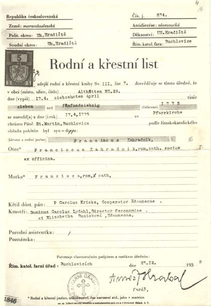
Matriční záznam — 2. generace - 3.generace
Benedikt
narozen 20. 3. 1815
A historie se opakuje. Z Benedikta se stává sklář a za ženu pojme sličnou Julianu. Jim se pak ve Starých Hutích č. 11, dne 2. 4. 1843, narodil syn František.
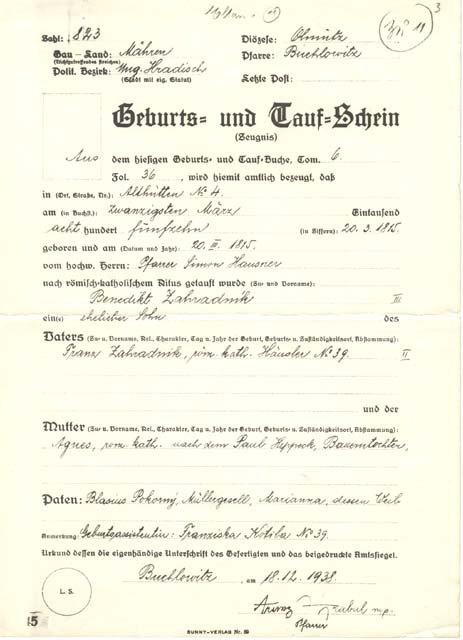
Matriční záznam — 3. generace - 4.generace
František
narozen 2. 4. 1843, Staré Hutě
Jak šel čas, tak i František našel zalíbení nejen ve skle, ale i v moudrých ženách, seznámil se s Marií, dcerou hostinského ve Staré Huti, a přesídlili o kousek dál do Stupavy. A tam, 23. 12. 1869, se jim narodil syn Emanuel.
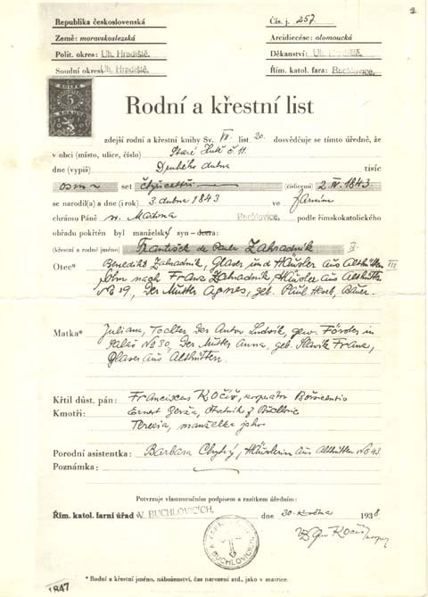
Matriční záznam — 4. generace - 5.generace
Emanuel
narozen 23. 12. 1869, Stupava
Jo, Emanuel. O něm jsem již něco zaslechl z vyprávění mého dědy. Protože sklárny ve Staré Huti krachovaly a práce bylo stále méně a méně, tak Emanuel se svojí ženou Marií, rozenou Šlauzarovou, přesídlili do Vídně. Ve Vídni si otevřel sklárnu a dokonce se v oboru sklofoukač stal i soudním znalcem.
Na svou dobu byl vyšší postavy, vzpřímené chůze a s mohutným knírem. A jak mi děda vyprávěl, tak při nedělních vycházkách po Vídni vzbuzoval takový respekt, že mu i policisté salutovali.
Na fotce je vyfocen se svým vnukem Pavlem (o něm se tu ještě také zmíním, je to totiž můj otec). Fotografie byla pořízena v roce 1943, kdy mu bylo již 74 roků. Vedle stojícímu Pavlovi bylo v té době 18 a byl právě vyučeným sklofoukačem.
Rodičům se pak ve Vídni, dne 20. 8. 1896, narodil syn, jehož pokřtili Franz-Maria.
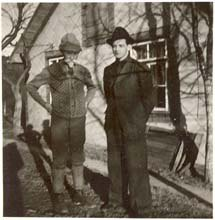
Emanuel s vnukem Pavlem, 1943 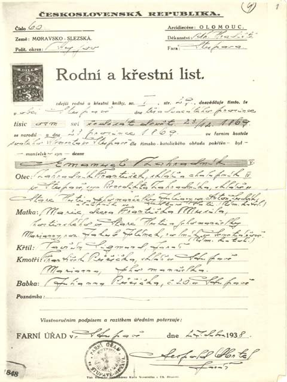
Matriční záznam — 5. generace - 6.generace
Franz-Maria
narozen 20. 8. 1896, Vídeň
Franz-Maria… pro mě to byl Spořilovský děda. V mých dětských očích laskavý děda, který mi vysvětloval, jak funguje parní stroj, jak se má štípat a sekat dříví, aby nebylo krvavé, a mnoho dalších, pro život potřebných věcí. Tak tenhle děda, v dobách, kdy ještě vůbec nebyl otcem a natož dědou, se jednoho dne nasytil té roztomilé despotické povahy svého otce Emanuela a utek do Prahy. Tady si v Lipové ulici otevřel sklářskou dílnu a jal se provozovat sklářské řemeslo.
Na fotce z roku 1926 je právě ve své dílně v Lipové ulici v Praze. A tady je i článek z roku 1940, ve kterém děda vypráví o své práci.
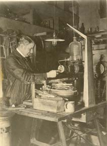
Děda ve své dílně v Lipové ulici, 1926 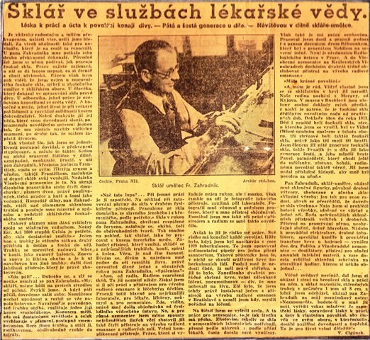
Sklář ve službách lékařské vědy — článek z roku 1940 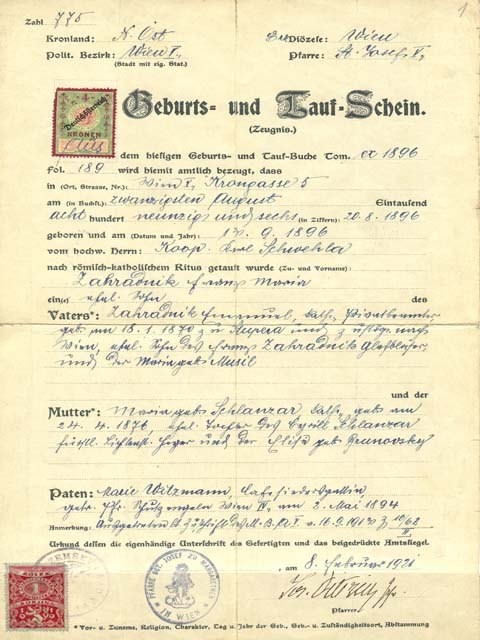
Matriční záznam — 6. generace - 7.generace
František a Pavel
narozeni 21. 11. 1924 a 8. 3. 1927
Zástupci sedmé generace jsou dva bratři. František, narozený 21. 11. 1924, zde na fotce z 19. 10. 1954, a Pavel, můj otec, narozený 8. 3. 1927. Ta fotka je někdy z roku 1957.
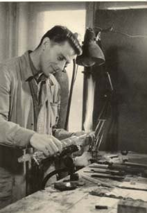
František, 19. 10. 1954 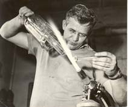
Pavel, můj otec, kolem roku 1957 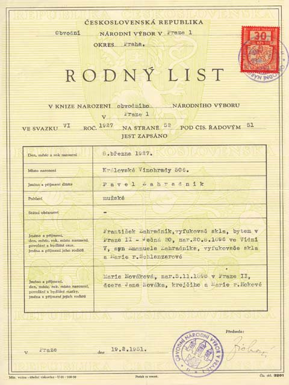
Rodný list — 7. generace - 8.generace
Michal
narozen 12. 4. 1957, Praha
No a tady jsem již já. Narozen 12. 4. 1957 v Praze. V letech 1972–1975 jsem se vyučil foukačem technického skla ve sklárnách Kavalier v Sázavě. Po vyučení jsem byl zaměstnán v Chiraně Modřany, ve Výzkumném ústavu makromolekulární chemie a v ČKD Polovodiče na Pankráci. Od roku 1988 jsem, s povolením Národního výboru, začal soukromě podnikat a činím tak dodnes. V letech 1984–1989 jsem absolvoval elektrotechnickou průmyslovku v Praze Nuslích, obor regulace a měření.
Další informace naleznete v sekci Mé sklářské začátky.

Při práci nad kahanem - 9.generace
Jitka a Jan
narozeni 10. 2. 1987
Devátou generaci zastupují dvojčata Jitka a Jan, narození 10. 2. 1987. Ovšem jak se zdá, jejich zájmy jdou jinou cestou a se mnou pravděpodobně naše sklářská tradice končí…


Zájemce o širší rozsah mého rodokmenu pak odkazuji na stránku MyHeritage: myheritage.cz/site-family-tree-22597601/zahradnik